Aling Lucing's Sisig
Known as the "Sisig Capital," this is where the original sisig became popular.

Mila's Tokwa't Baboy
Famous for its crispy pork and tofu dishes.

Cafe Fleur
A modern restaurant serving Kapampangan dishes with a twist.

Bale Dutung (Chef Claude Tayag)
Bale Dutung is a private dining space by Chef Claude Tayag, a Kapampangan chef, author, and one of the culinary giants of the country.

Apag Marangle
Apag Marangle is one of Pampanga’s most beloved Kapampangan restaurants, and yes — they have a branch in Angeles City aside from their original site in Guagua.

Trattoria Altrove Angeles City
Trattoria Altrove Angeles City is a delightful escape that feels like stepping into an enchanting Italian villa, especially when you choose to dine outdoors.

Scots Restaurant & Cafe
Scots Restaurant & Café in Angeles City, Pampanga is a modern dining spot that blends the feel of a café with hearty restaurant meals.
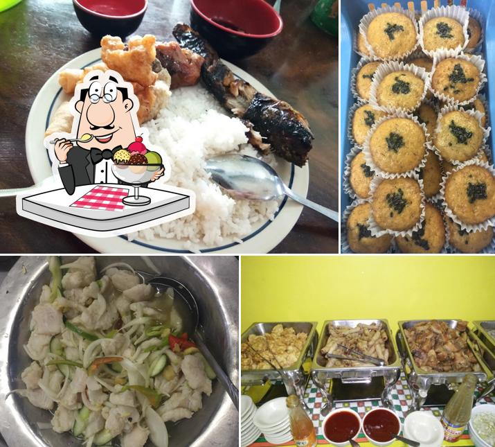
Kusina Ng Ima (O.C.G. Grill House)
The restaurant offers a variety of Filipino dishes with a Kapampangan twist, such as Kare-Kare and Patatim. It is known for serving authentic dishes with fresh ingredients, making it a perfect spot for family and friends.
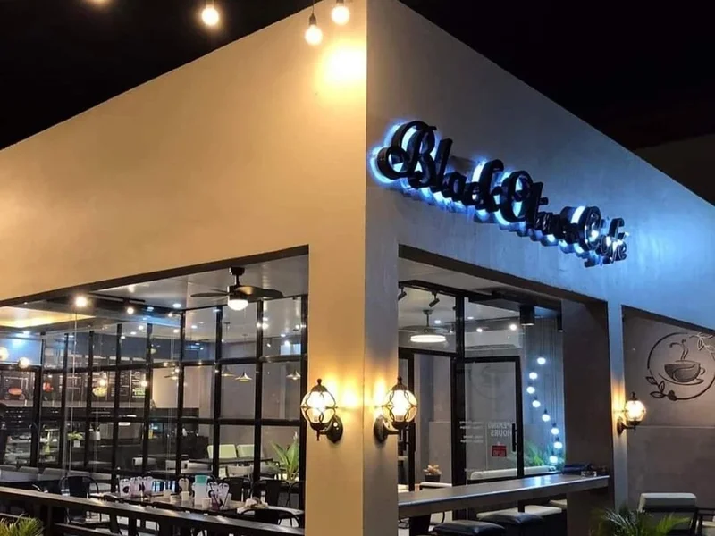
Black Olives Café
A historic Catholic church dedicated to St. Peter the Apostle, known for its religious importance and annual Apung Iru celebrations.
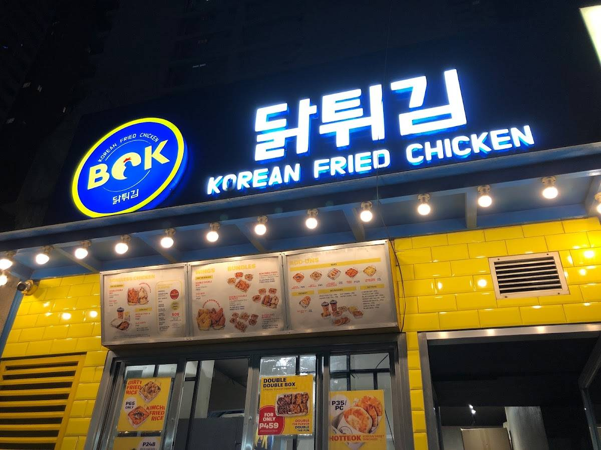
BOK Korean Fried Chicken – Apalit
BOK Korean Fried Chicken in Apalit serves crispy, flavorful Korean-style fried chicken with a variety of sauces, making it a go-to spot for barkadas craving comfort food with a Korean twist.
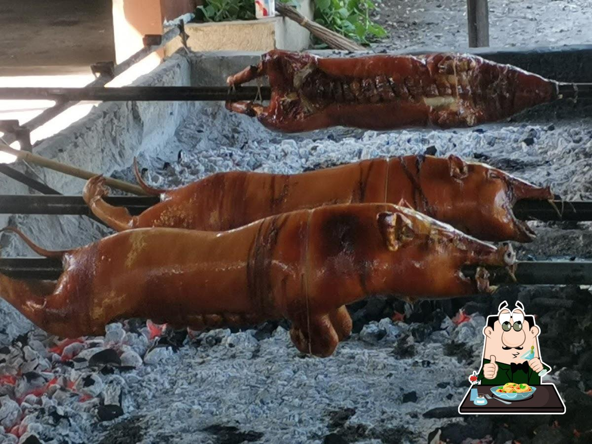
Kafarmer's Cebu Lechon and Farm
Is a rustic dining spot that highlights authentic Cebu-style lechon paired with farm-fresh sides, offering a hearty countryside feast experience in Pampanga.
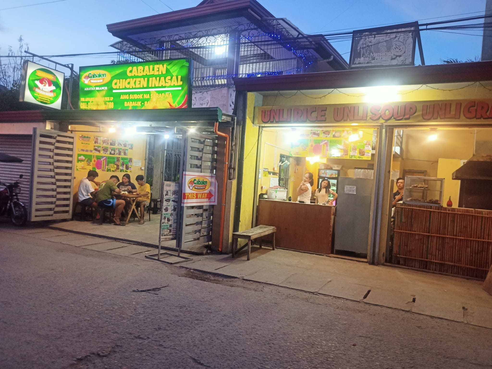
Cabalen Chicken Inasal House Arayat Branch
Cabalen Chicken Inasal House – Arayat Branch is a local dining spot that specializes in flavorful grilled chicken inasal, offering a simple yet satisfying Kapampangan-style meal experience.
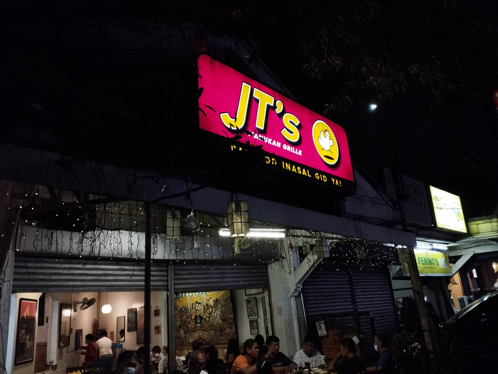
JT's MANUKAN
JT's MANUKAN is a beloved local eatery in Bacolor, famous for its authentic Filipino dishes and friendly atmosphere.
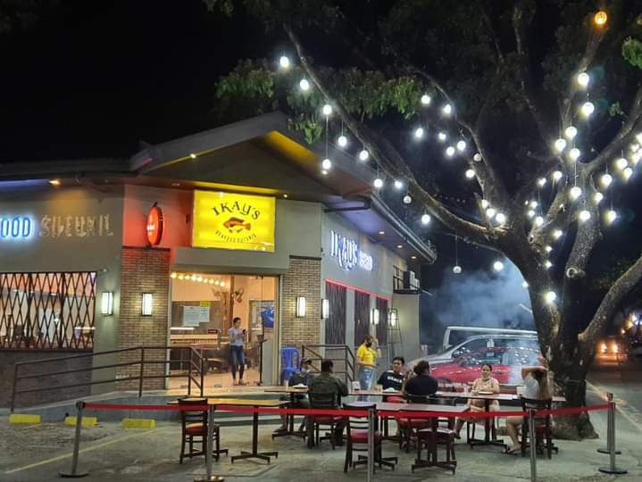
IKAY's SEAFOOD & GRILL
IKAY's SEAFOOD & GRILL is a local dining spot that serves fresh seafood and grilled specialties, offering a hearty and flavorful experience perfect for family and barkada gatherings.
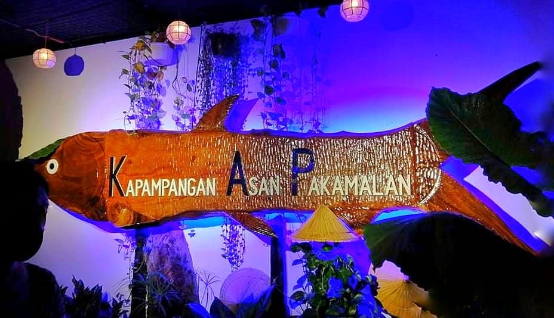
KAPAMPANGAN ASAN PAKAMALAN (KAP)
KAPAMPANGAN ASAN PAKAMALAN (KAP) is a local eatery in Bacolor that celebrates Kapampangan culinary pride through flavorful native dishes and grilled specialties served in a warm, home-style setting.
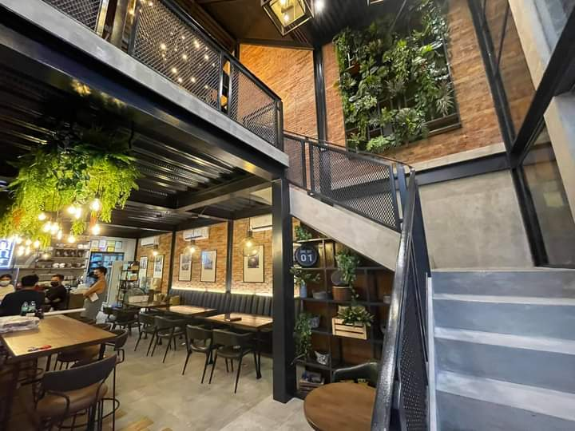
NUAN CAFÉ
NUAN CAFÉ is a cozy and modern café offering handcrafted coffee, refreshing drinks, and comfort food, making it a perfect chill spot for students and barkadas.
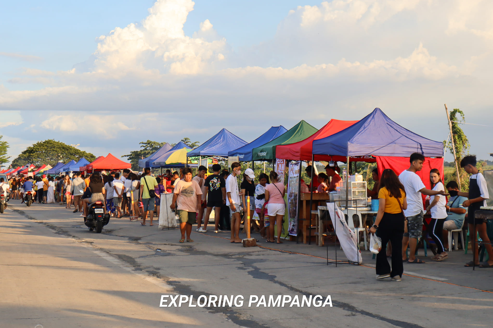
PINAK Foodpark
A lively dining hub featuring a mix of local and international food stalls, perfect for barkadas and families looking to enjoy good food and chill vibes in one place.

B Farm Cafe by Alexa's Kitchen
Charming countryside café offering fresh, home-style dishes and drinks made with local ingredients, perfect for relaxing and enjoying Pampanga’s farm vibe.

Bale Marangle Candaba
Bale Marangle in Candaba is a farm-style restaurant offering authentic Kapampangan dishes made from fresh local ingredients, giving diners a true taste of Pampanga’s countryside charm.
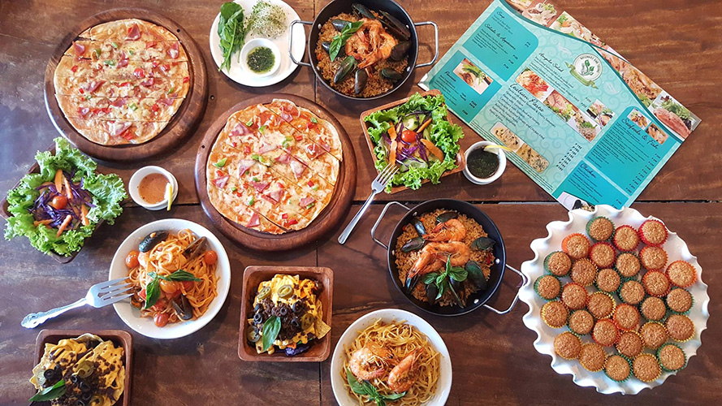
Rosemary and Thyme
Rosemary and Thyme in Floridablanca is a cozy café-restaurant offering hearty Kapampangan-inspired meals and refreshing drinks, perfect for casual dining with a homey vibe.

Funnside Ningnangan
Funnside Ningnangan is a popular grill restaurant known for its wide selection of affordable ihaw-ihaw dishes, offering a lively dining experience perfect for families and barkadas.

Fabrika Dining Villas
Fabrika Dining Villas is a charming restaurant offering a delightful mix of local and international cuisine, perfect for a romantic dinner or a special occasion.

Estos Kitchen & Café
Estos Kitchen & Café is a modern casual dining spot offering a mix of Filipino comfort food and international café favorites, perfect for students and families looking for hearty meals in a cozy setting.

Bale Lubao Restaurant and Pasalubong Center
Bale Lubao Restaurant and Pasalubong Center is a one-stop spot in Lubao serving authentic Kapampangan dishes and local delicacies for pasalubong.

Wow Lubao Restaurant, Cafe, Teahouse and Pasalubong Center
Wow Lubao Restaurant, Café, Teahouse & Pasalubong Center is a cultural dining destination in Lubao offering Kapampangan dishes, specialty drinks, and local delicacies for pasalubong all in one place.

Binulo Restaurant
A popular Kapampangan restaurant known for traditional dishes like bulanglang and bringhe, served in a rustic Filipino setting.

Cafe Mesa
A casual Filipino restaurant serving classic comfort food and family-style meals.
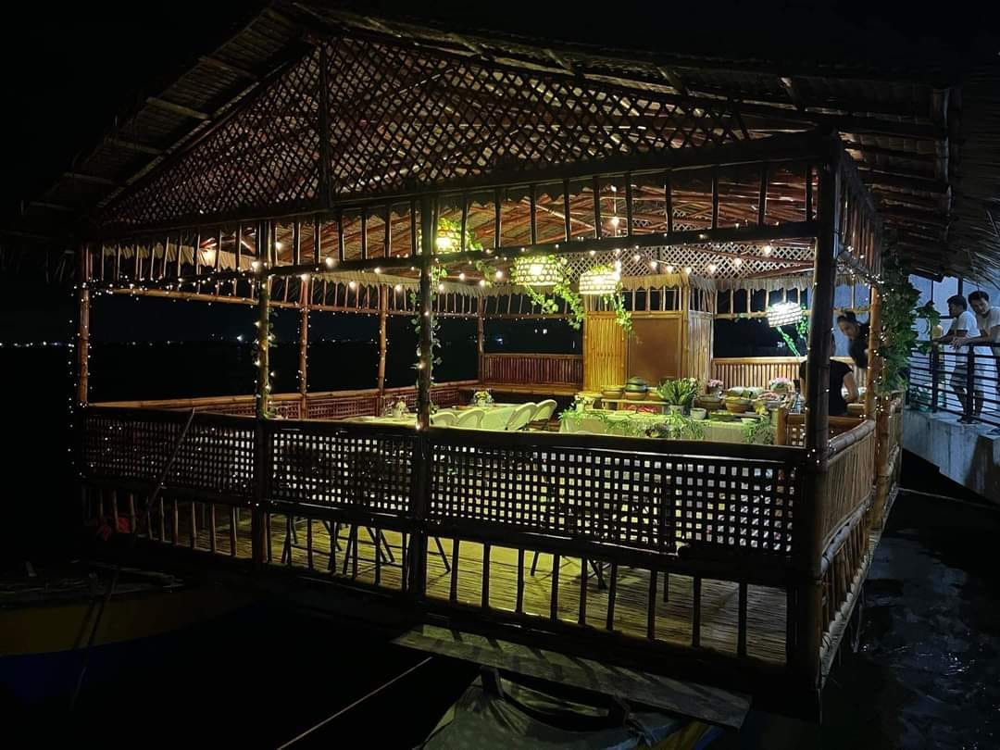
Macabebe Floating Restaurant (CASA DEL LAGO)
Macabebe Floating Restaurant (Casa del Lago) is a scenic riverside dining spot offering Kapampangan dishes and fresh seafood while guests enjoy views of the Pampanga River.
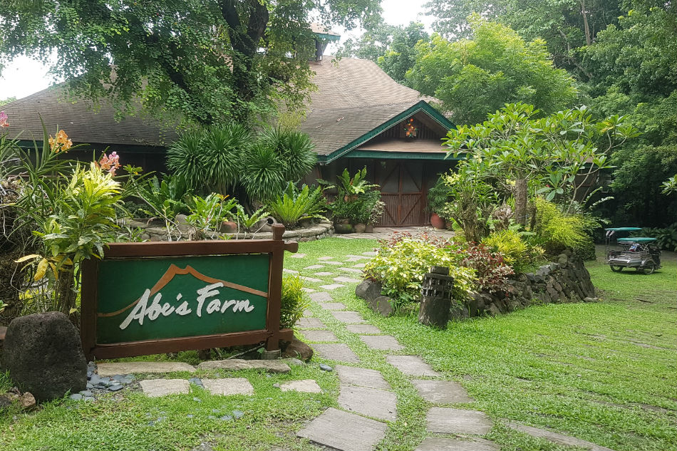
Abe's Farm
Abe’s Farm in Magalang, Pampanga is a rustic garden resort and restaurant offering traditional Kapampangan cuisine in a serene farm setting, perfect for relaxation and cultural dining.
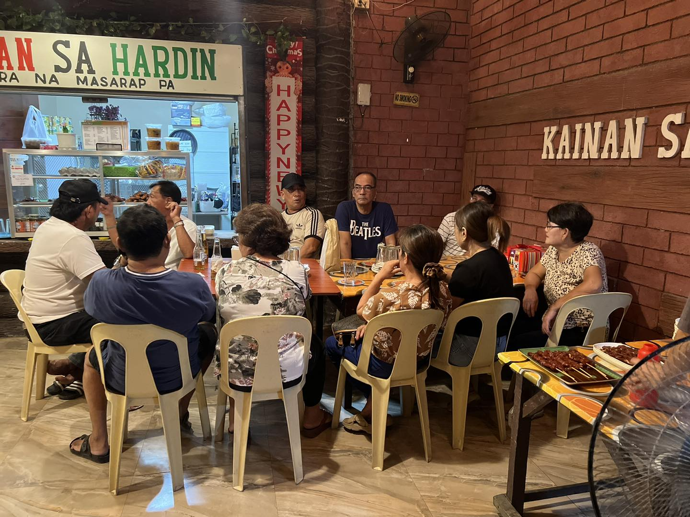
Kainan sa Hardin
Kainan sa Hardin in Pampanga is a garden-inspired restaurant serving Filipino comfort food in a relaxing, nature-filled setting.

Mi-Abe Kapampangan Cuisine
Mi-Abe Kapampangan Cuisine in Pampanga is a homey restaurant serving authentic Kapampangan dishes that highlight the rich culinary heritage of the region.

Kusina Ni Aduy
Kusina Ni Aduy in Pampanga is a casual eatery serving affordable Kapampangan comfort food and grilled favorites in a simple, homey setting.

Kusinang Matua
Kusinang Matua in Pampanga is a heritage-inspired restaurant serving traditional Kapampangan dishes that highlight the province’s rich culinary history.

M in Café
M in Café in Pampanga is a cozy hangout spot offering coffee, comfort food, and light meals in a relaxed, student-friendly setting.
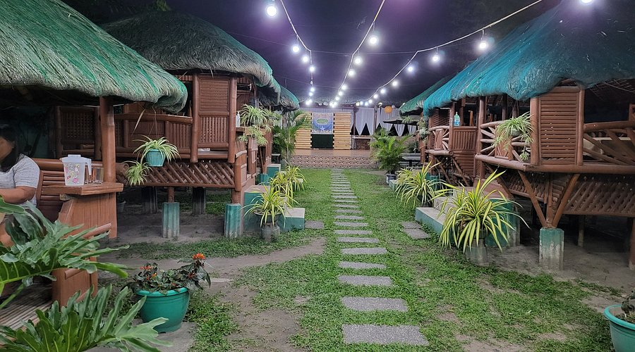
Leaf Farm Restaurant
Leaf Farm Restaurant in Pampanga is a farm-to-table dining spot offering fresh, locally sourced dishes in a relaxing countryside setting.
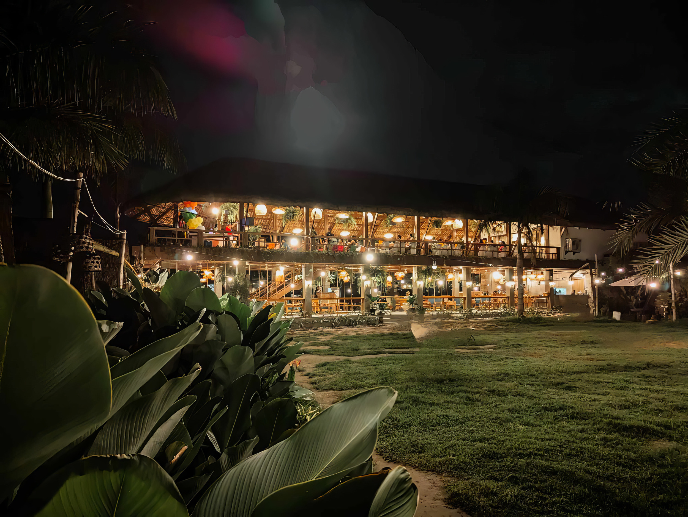
Reca Cafe and Restaurant
Reca Café and Restaurant in Pampanga is a cozy dining spot offering Filipino comfort food and café favorites in a relaxed, family-friendly setting.

Everybody's Café
Everybody’s Café in Pampanga is a heritage restaurant serving authentic Kapampangan cuisine, known for its home-style dishes and timeless local flavors.

Dish n That San Fernando Pampanga
Dish n That in San Fernando, Pampanga is a casual dining spot offering Filipino comfort food and Kapampangan favorites in a relaxed, family-friendly atmosphere.

Hungry Neighbors PH CSFP
Hungry Neighbors PH in City of San Fernando, Pampanga is a trendy café-style restaurant offering comfort food, coffee, and modern Filipino dishes in a cozy, youthful atmosphere—perfect for casual dining or hangouts.

Rainforest Kitchen by Chef Vince Garcia
Rainforest Kitchen by Chef Vince Garcia is a lush garden-style restaurant in San Fernando serving creative Kapampangan and international dishes.
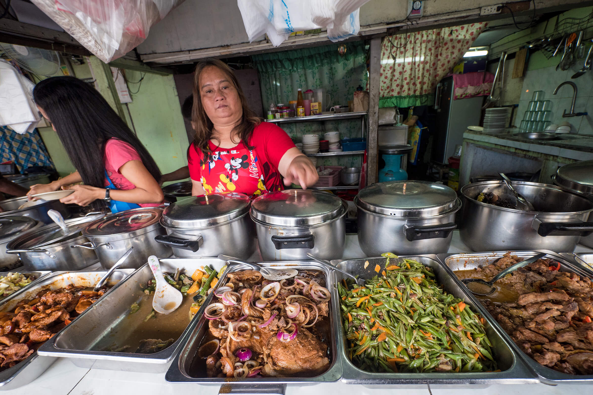
Local Carinderias and Eateries
Local Carinderias in Pampanga are simple, budget-friendly spots serving everyday Kapampangan home-cooked meals.

Apag Marangle San Simon
Apag Marangle in Pampanga is a farm-themed restaurant serving Kapampangan dishes in traditional bamboo huts surrounded by fishponds and greenery.
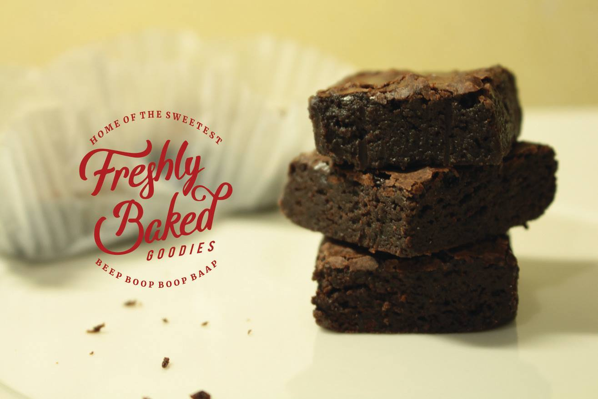
Caloneya Freshly Baked Goodies
Caloneya Freshly Baked Goodies in Pampanga is a local bakery offering homemade breads, pastries, and sweet treats, known for its fresh-from-the-oven quality and comforting flavors.

Bale Capampangan
Bale Capampangan is a rustic-themed restaurant showcasing authentic Kapampangan cuisine, served in a homey setting that highlights Pampanga’s culinary heritage.

Alviz Farm Kapampangan Culinary and Heritage Tour
Alviz Farm Culinary & Heritage Tour** offers authentic Kapampangan dishes with farm-to-table dining and cultural storytelling in a rustic countryside setting.

Pipanganan Capampangan
A local dining spot highlighting traditional Kapampangan dishes, served in a rustic, home-style setting that reflects Pampanga’s culinary heritage.

Mabsi Soy Silogan
A popular local restaurant serving affordable silog meals, comfort food, and casual dining favorites enjoyed by residents and visitors.